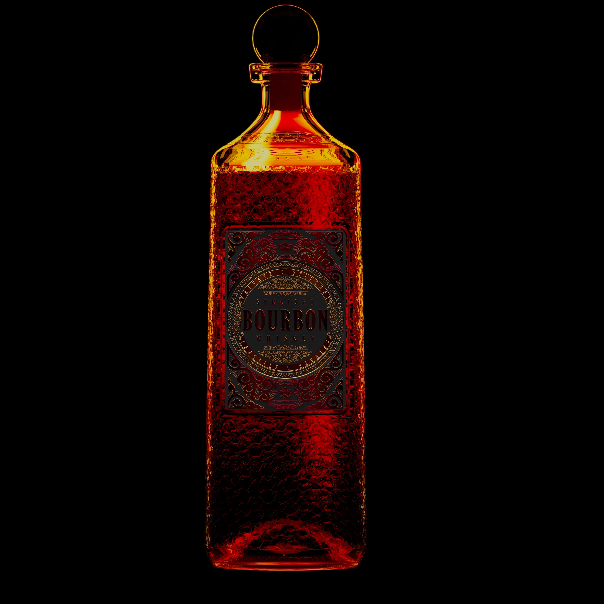
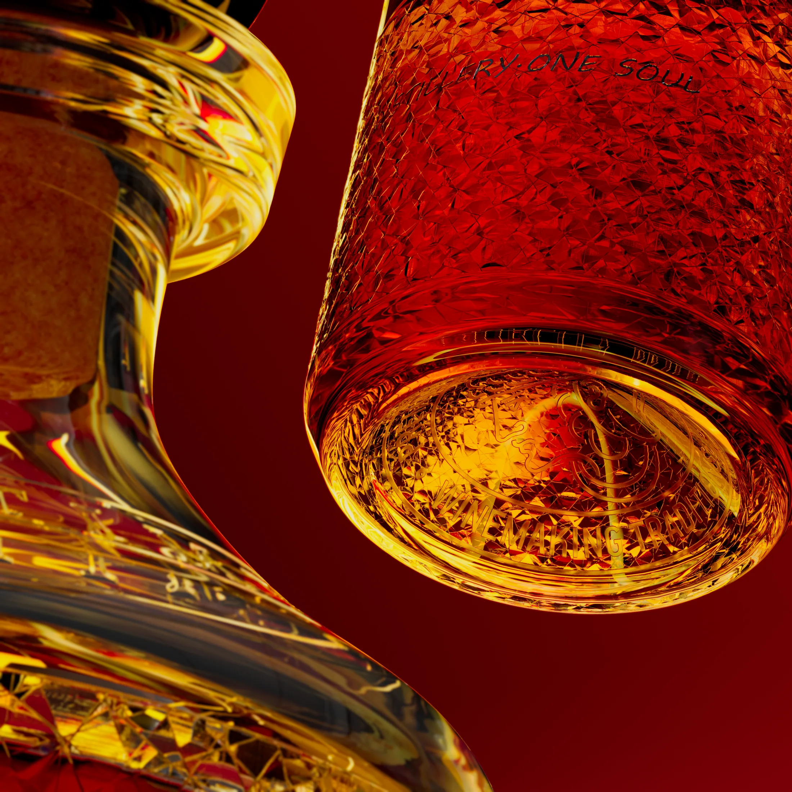

PROJECT 005 / MATERIAL & COLOR STUDY
威士忌
Whisky · Material Study
玻璃折射 / 风格化色彩 / 情绪布光
以玻璃的通透与折射为起点，让琥珀色酒液在深红色光影中呈现层次与温度。

材质与局部细节
DETAILS / 02—03

MATERIAL & LIGHT
让光成为设计的一部分，以色彩、折射与材质细节塑造视觉情绪。
Whisky · Material Study
玻璃折射 / 风格化色彩 / 情绪布光
以玻璃的通透与折射为起点，让琥珀色酒液在深红色光影中呈现层次与温度。


让光成为设计的一部分，以色彩、折射与材质细节塑造视觉情绪。